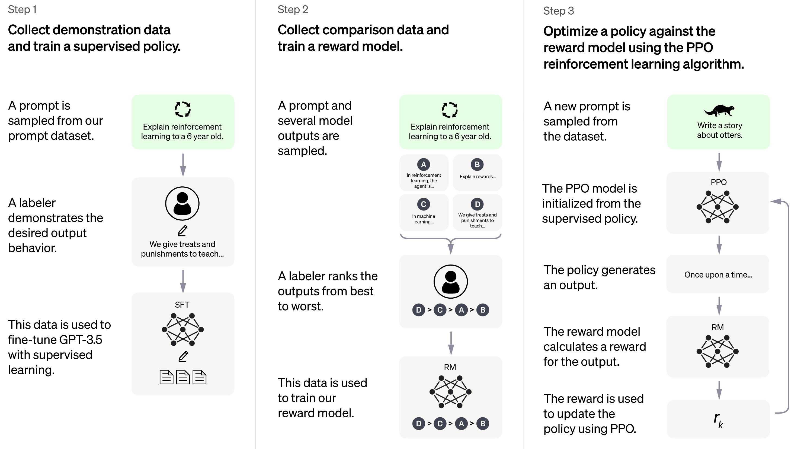

第五章 交互定义——个性化图灵测试
5.1 交互定义的形成
回顾此前的几种理解定义，不管是图灵测试式的行为定义、机器翻译式的等价转换定义还是专项任务式的分解定义，都缺少一种持续、开放的交互机制：翻译和专项任务面向的是固定输入和预设答案，图灵测试虽然设想了交互，却始终停留在由少数实验者参与的封闭场景中，其判断结果容易受到主观偏差的影响。这可能是造成这些任务的完成与真正的理解之间始终存在距离的一个深层原因：单个确定的目标可以被专门训练的系统学会，但这个系统未必具备其他能力。
针对某个具体问题，即使模型给出了正确答案，也无法证明它真正掌握了背后的知识结构。部分研究工作便尝试以更多交互的方式对模型能力进行验证，KIEval (Yu et al., 2024) 和 DyVal 2 (Zhu et al., 2024) 等交互式动态评测（Interactive Dynamic Evaluation）工作代表了这一方向的早期探索，通过把目标从”在固定题目上得分多少”变成”在持续追问和动态改写中能否保持稳健”，尝试利用更多的交互为理解提供外部证据。这在某种意义上也证明了交互对于理解的意义和重要性。
以 ChatGPT 为代表的对话式大模型的出现，使数以亿计的普通用户开始在日常产品中持续与系统交互，从而给出他们自己关于理解的判断。相对于早期的图灵测试，判断权从少数实验者转移到了海量用户手中。这使交互本身不仅成为应用场景，更成为新的理解判据：人们重新开始通过交互来判断系统是否理解，但判断不再发生在实验室里，而发生在日常产品使用中。这可以看作图灵测试的回归，但不再是”一次性的模仿游戏”，而是大规模、个性化、产品化的持续判断。
5.2 代表场景
以 ChatGPT 为代表的聊天助手是这一阶段最直接的代表。ChatGPT 在 2022 年底发布后两个月内用户突破一亿，大量用户在使用后报告了令人惊奇的体验：模型似乎能够理解复杂的隐喻、捕捉言外之意、在多轮对话中保持主题连贯性。这种来自海量用户的自发反馈，使”系统是否理解语言”从一个学术争论变成了一个公众可以参与的日常判断。 具体来看，持续的对话要求模型在多轮对话中理解当前问题与前文之间的关系，并给出合适的回复。在某种意义上说，这就是图灵测试的要求。
除了相对通用的聊天助手之外，在搜索、客服、编程等领域也出现了一些智能助手，他们大多以聊天为主要的沟通形式，但在各自具体面对的任务上有针对性的发展。比如，搜索助手把检索、总结和解释结合起来，以符合用户任务目标的方式组织答案；客服助手要求模型识别意图、情绪和流程约束；编程助手（Copilot） 则进一步要求模型在编程的上下文中理解用户长期偏好、工作上下文和具体协作目标。这些助手能够起到有效帮助作用的前提就是理解用户在对话中提出的任务需求，因而也成为检验理解的有效维度。
5.3 历史必要性
交互定义之所以成为必要，正是因为静态基准评测暴露了局限。大量模型在数据集上取得高分，却在真实使用中表现出上下文遗失、风格漂移、意图误判和任务脱靶等问题 (Ribeiro et al., 2020; Linzen, 2020)。研究人员意识到必须回到真实用户、真实语境和连续对话中重新检验理解能力。只有在互动过程中，系统是否真正捕捉到意图、是否能够动态调整回答方式、是否能在多轮约束下保持一致，才会被持续暴露出来。 因此，交互不仅是应用场景，而且是直接的评测形式。而海量用户的直观感受，代替了部分专家的评价和结论，从而在现在的时代具有更强的说服力。
参考文献
Linzen, Tal. 2020. How can we accelerate progress towards human-like linguistic generalization? In Proceedings of the 58th Annual Meeting of the Association for Computational Linguistics, pages 5210–5217. Association for Computational Linguistics.
Ribeiro, Marco Tulio, Tongshuang Wu, Carlos Guestrin, and Sameer Singh. 2020. Beyond accuracy: Behavioral testing of NLP models with CheckList. In Proceedings of the 58th Annual Meeting of the Association for Computational Linguistics, pages 4902–4912. Association for Computational Linguistics.
Yu, Zhuohao, Chang Gao, Wenjin Yao, Yidong Wang, Wei Ye, Jindong Wang, Xing Xie, Yue Zhang, and Shikun Zhang. 2024. KIEval: A knowledge-grounded interactive evaluation framework for large language models. In Proceedings of the 62nd Annual Meeting of the Association for Computational Linguistics (ACL 2024), pages 5967–5985. Association for Computational Linguistics.
Zhu, Kaijie, Jindong Wang, Qinlin Zhao, Ruochen Xu, and Xing Xie. 2024. Dynamic evaluation of large language models by meta probing agents. In Proceedings of the 41st International Conference on Machine Learning (ICML 2024). PMLR.
5.4 技术进展
交互定义能够在2020年代初成为一种对理解的可操作性定义，有其特定的技术背景。一方面，在预训练微调范式的基础上，OpenAI的研究人员进一步推进了基础模型参数在不同任务之间的共享。在GPT、GPT-2、GPT-3系列模型的探索中 (Radford et al., 2018; Radford et al., 2019; Brown et al., 2020)，模型规模的跃升要求训练架构、数据质量和 GPU 算力不断持续增强。2020年，GPT-3将参数量推进到千亿级，并发现模型在不经过任务特定微调的情况下也能应对多样化的需求。这使得模型具备接受各种不同用户个性化的对话等需求的基础知识和能力。这一规模的模型被称为大语言模型（Large Language Models, LLMs），有时候也简称大模型。
另一方面，对大语言模型的后训练技术也持续发展。指令学习（Instruction Tuning）采用大规模多样化的指令对模型进行有监督训练，使得模型完成多样化指令的能力大幅提升。更进一步的是，RLHF（Reinforcement Learning from Human Feedback，基于人类反馈的强化学习）方法通过学习人类反馈中包含的倾向，并进一步指导模型的回复生成，使”符合人类偏好”成为训练目标的一部分 (Ouyang et al., 2022)。

在经过这样的训练之后，模型不仅能理解用户的指令，也可以根据指令完成一些知识问答、算术运算、翻译、总结、创意写作等基本任务。在某种意义上讲，给定的单一模型也具备了完成等价转化定义和分解定义的各种要求的能力，并且这些能力在不同用户的个性化对话中展现出来，这也是用户能体会到模型的理解能力的根本原因。
参考文献
Radford, Alec, Karthik Narasimhan, Tim Salimans, and Ilya Sutskever. 2018. Improving language understanding by generative pre-training. Technical report, OpenAI.
Radford, Alec, Jeffrey Wu, Rewon Child, David Luan, Dario Amodei, and Ilya Sutskever. 2019. Language models are unsupervised multitask learners. Technical report, OpenAI.
Brown, Tom B., Benjamin Mann, Nick Ryder, Melanie Subbiah, Jared Kaplan, Prafulla Dhariwal, Arvind Neelakanth, Girish Sastry, Amanda Askell, Sandhini Agarwal, Ariel Herbert-Voss, Gretchen Krueger, Tom Henighan, Rewon Child, Aditya Ramesh, Daniel M. Ziegler, Jeffrey Wu, Clemens Winter, Christopher Hesse, Mark Chen, Eric Sigler, Mateusz Litwin, Scott Gray, Benjamin Chess, Jack Clark, Christopher Berner, Sam McCandlish, Alec Radford, Ilya Sutskever, and Dario Amodei. 2020. Language models are few-shot learners. In Advances in Neural Information Processing Systems 33, pages 1877–1901. Curran Associates.
Ouyang, Long, Jeffrey Wu, Xu Jiang, Diogo Almeida, Carroll Wainwright, Pamela Mishkin, Chong Zhang, Sandhini Agarwal, Katarina Slama, Alex Ray, John Schulman, Jacob Hilton, Fraser Kelton, Luke Miller, Maddie Simens, Amanda Askell, Peter Welinder, Paul Christiano, Jan Leike, and Ryan Lowe. 2022. Training language models to follow instructions with human feedback. In Advances in Neural Information Processing Systems 35. Curran Associates.
5.5 技术局限
在交互定义下，理解不再仅由离线标签界定，而越来越由用户偏好和交互后果来共同塑造。交互时代的”理解证据”越来越不是一句话本身是否正确，而是系统在大量真实比较中是否持续被人判定为更贴合需求。
但当用户对系统的理解能力不断认可之后，对系统能力的要求也在不断提升。仅依靠系统输出本身进行复杂任务渐渐已经不能满足用户的需求。但当用户真正关心的不再是”你是否理解了我的话”，而是”你能否据此把事情做成”，交互定义本身就开始逼近它的边界。即便在对话中显得自然、贴合，系统也仍可能在需要精确求解、多步规划和外部执行时失败。理解的外部判据因此继续向前推进：从让人觉得它懂了，转向看它是否能在任务与环境中真正实现目标。
参考文献
Ouyang, Long, Jeffrey Wu, Xu Jiang, Diogo Almeida, Carroll Wainwright, Pamela Mishkin, Chong Zhang, Sandhini Agarwal, Katarina Slama, Alex Ray, John Schulman, Jacob Hilton, Fraser Kelton, Luke Miller, Maddie Simens, Amanda Askell, Peter Welinder, Paul Christiano, Jan Leike, and Ryan Lowe. 2022. Training language models to follow instructions with human feedback. In Advances in Neural Information Processing Systems 35. Curran Associates.
5.6 本章思考题
参考讨论见附录”第五章思考题参考讨论”。
- 今天用户所说的”它懂我了”，与图灵测试时代”它像人一样”之间究竟是什么关系？这是简单回归，还是在新技术条件下的重现与升级？
- 为什么大模型时代的理解判断越来越依赖”是否贴合我的具体语境”，而不只是”答得对不对”？
- 能否结合一个真实使用场景，说明系统即便回答内容大体正确，用户仍然会觉得”它没有真正懂我”？
- 个性化记忆、偏好学习与长期上下文，究竟是在增强系统的理解能力，还是在增强系统呈现出”理解了”的表象？
- 如果交互定义越来越依赖用户满意度与偏好排序，那么措辞得体、风格顺从和情绪贴合，是否可能被误当成更强的理解证据？
- 不同用户、不同任务与不同文化背景下，对”被理解”的标准往往并不一致；这是否意味着交互定义天然更分散、更情境化，也更难形成统一标准？